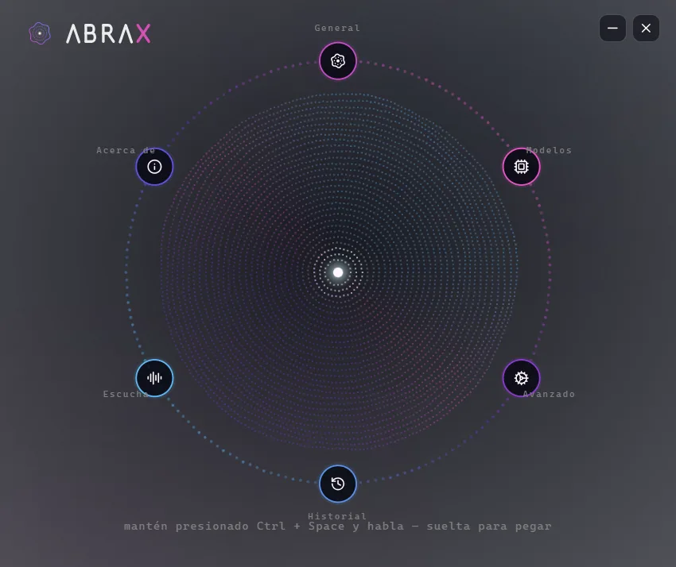
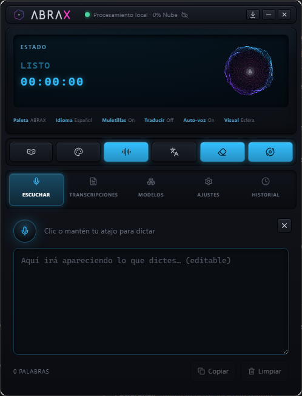
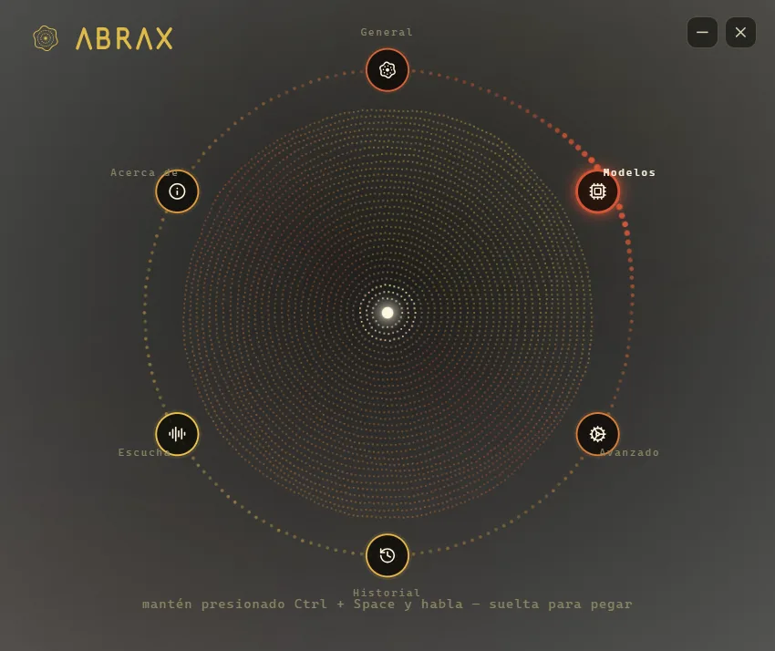

Del arameo avra k'davra — «creo mientras hablo».
clic para entrar
Del arameo avra k'davra — «creo mientras hablo».
clic para entrar

Puesto de voz local · para los que le hablan a la IA todo el día

« DI LA PALABRA. »
Presionas un atajo, hablas en tu español, y el texto —código o prosa— aparece en la app activa.
Local por defecto: el audio del micrófono nunca sale de tu equipo. Las funciones online son opt-in y vienen desactivadas.
Presiona. Habla. Aparece.
Cuatro pasos, sin ventanas de por medio.
Un atajo global, en cualquier app.
En tu español. Las muletillas se filtran solas.
En tu equipo. El audio no sale de ahí.
El texto aparece donde estaba el cursor.
Hecho para tu voz.
Lo que hace hoy. Ni más ni menos.
Indexa tu proyecto y corrige el dictado con tu propio vocabulario.

Ideas sueltas entran; un prompt estructurado sale. Sin ningún LLM.
Dos voces locales: una para prosa, una para código. El clip es la app real.
es-419 de primera clase: entiende el español que hablas, no uno neutro de doblaje.

Clásico, Orbital y Retro.


ABRAX e IMPERIAL.

Tu audio no sale de aquí.
Sin letra chica: esto es exactamente lo que pasa con tus datos.
Vienen desactivadas; se activan una por una.
Todo vive en una carpeta local:
La borras y no queda nada. No hay cuenta que cerrar.
La esfera te escucha.
La esfera de arriba ya está viva: con tu micrófono respira contigo.
El permiso de micrófono se pide solo si presionas el botón, nunca al cargar la página. El audio se procesa en tu navegador y no se envía a ningún servidor.
Lo que funciona y lo que todavía no, con la misma letra.
Pide conceder Accesibilidad y Micrófono la primera vez. En Intel, los modelos grandes van lentos.
SmartScreen puede advertir mientras el instalador gana reputación. Verifica el checksum y sigue.
En Wayland la inserción global es limitada: algunos entornos pasan por el portapapeles.
Cada opción tiene su lugar. Esta es la diferencia, sin caricaturas.
| ABRAX | Dictado del sistema | Dictado en la nube | |
|---|---|---|---|
| Precio | Gratis (MIT) | Incluido en el SO | Suscripción o pago por uso |
| El audio se procesa | En tu equipo | Según el SO, a veces en la nube | En servidores de terceros |
| Español es-419 | Primera clase — muletillas, voz de código | Variable | Generalmente bueno |
| Vocabulario de tu repo | Sí — Diccionario Vivo | No | No |
Honesto: con mucho ruido de fondo, un servicio en la nube grande todavía puede transcribir mejor que un modelo local chico.
Las que nos harías antes de instalar.
Gratis. Open source. Local. Para siempre.
Compara el resultado con SHA256SUMS.txt, publicado junto a cada release firmado.